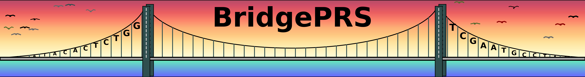

This page contains all command available in BridgePRS.
Tips
When constructing new parameters, we follow the following rule: if the command has effect on any file that is not the target,
it will have a prefix of the file name. For example, --base-info applies INFO score filtering on the base file, --ld-info perform INFO score filtering on the LD reference file and --info applies the INFO score filtering on the target file.
Input Population Files/Arguments
-
--sumstats_prefixPath to sumstats data -
--phenotype_filesphenotype test and validation data -
--pop_config(s)population configuration file(s) -
--pop or --popspopulation names (AFR, EUR, etc) -
--snp_fileList of QCed SNP ids
System Level Toggles/Arguments
-
--coresBy default bridgePRS is parralelized across (n-1) cores -
-oOutput folder for BridgePRS -
--platformForce platform (Linux or MacOS) -
--verboseToggle Verbose Mode On -
--noPlotsSkip Post-Pipeline Analysis (Plotting) -
--restartRepeat previously completed steps
Parameter Arguments
-
--fstfst value -
--max_clump_sizeMax Size for Clumping -
--thinned_snplistThinned snp list for large clumps
Internal File Arguments
-
--model_filemodel result generated from the build-model subprogram -
--clump_prefixprefix for files generated by clump step -
--beta_prefixprefix for files generated by beta step -
--predict_prefixprefix for files generated by predict step -
--result_fileprs result files
File Column Names
Phenotype Files
--phenotypePhenotype File Field: phenotype--covariatesPhenotype File Field: covariates
Sumstats Files
-
--ssf-altSumstats Field: alt allele -
--ssf-betaSumstats Field: beta -
--ssf-mafSumstats Field: MAF -
--ssf-pSumstats field: P-value -
--ssf-refSumstats Field: reference allele -
--ssf-seSumstats field: standard error -
--ssf-snpidSumstats field: snpID -
--ssf-nSumstats Field: Sample Size -
--sumstat_prefixpath to sumstats file prefixes -
--sumstats_suffixSumstats Suffix